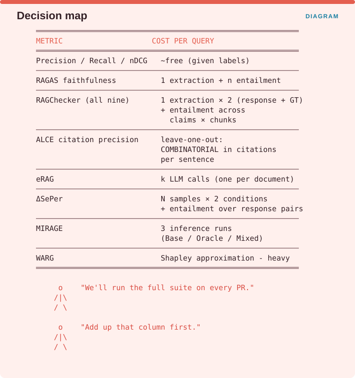
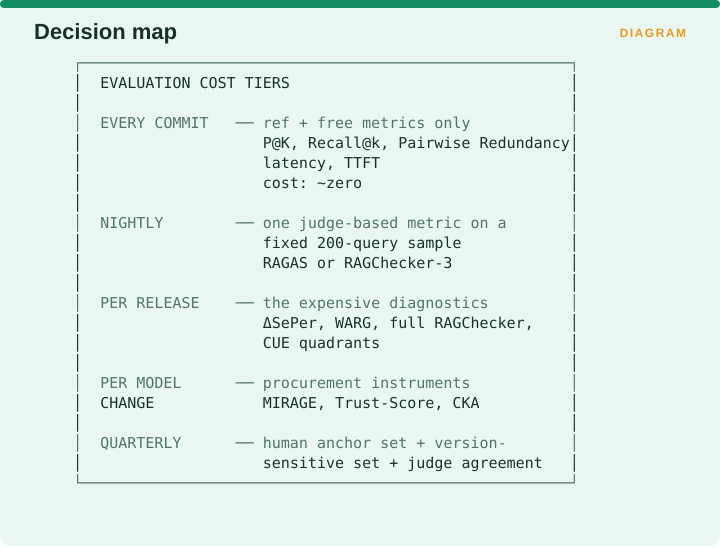

Measuring Retrieval › D.5 The cost of evaluation itself
Every metric in Supplements A and B has a price, and the prices differ by orders of magnitude.

Precision, recall and nDCG are effectively free once you have labels. RAGAS faithfulness costs one claim extraction plus an entailment check per claim. RAGChecker’s full nine costs two extractions, one over the response and one over the ground truth, plus entailment checks across every combination of claims and chunks. ALCE’s citation precision is combinatorial in the number of citations per sentence, because of the leave-one-out test. eRAG costs k model calls, one per retrieved document. ΔSePer costs N samples in each of two conditions plus entailment across every pair of responses. MIRAGE costs three full inference runs per question, covering the Base, Oracle and Mixed conditions. WARG requires a Shapley approximation and is the heaviest of the set.
The right response to a team proposing to run the full suite on every pull request is to ask them to add up that column first.
Two papers explicitly optimized the cost of evaluation, and both numbers are large enough to change your architecture.
eRAG uses up to 50 times less GPU memory than end-to-end evaluation, with improved runtime alongside (arXiv:2404.13781), and that reduction is what makes utility-based labelling feasible at all.
MIRAGE uses a 37,800-chunk retrieval pool, roughly 1% of a full wiki dump, which significantly reduces computational cost while retaining relevance to large-scale benchmarks such as MTEB (arXiv:2504.17137).
Both are instances of the same principle, which is that evaluation does not need to run at production scale to be informative. A well-constructed 1% sample beats a full-corpus evaluation you cannot afford to run often enough to catch a regression.

On every commit, run only the reference-based and reference-free metrics, meaning P@K, Recall@k, Pairwise Redundancy, latency and TTFT, all of which cost essentially nothing. Nightly, run one judge-based metric over a fixed 200-query sample, using RAGAS or the three promoted RAGChecker metrics. Per release, run the expensive diagnostics, meaning ΔSePer, WARG, the full RAGChecker set and the CUE quadrants. On every model change, run the procurement instruments, being MIRAGE, Trust-Score and CKA. Quarterly, run the human anchor set, the version-sensitive set and the judge-agreement check.
Measuring Retrieval · Madhava Gaikwad · First edition, September 2026